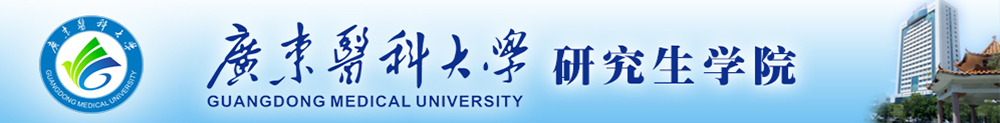

| 研究生学院简介 |
广东医科大学研究生学院于1985年被教育部批准为新增硕士生招生单位，1986年获国务院学位委员会第三批硕士学位授予单位，2002年获得同等学力在职人员申请硕士学位授予权，2003年获临床医学专业硕士学位培养单位，2013年我校获批为新增博士学位授予单位，2014年获公共卫生硕士专业学位授予权。目前有博士学位授权一级学科点1个 （临床医学），硕士学位授权一级学科点1个（临床医学），硕士学位授权二级学科点5个（生物化学与分子生物学、生理学、病理学与病理生理学、病原生物学、药理学），硕士专业学位授权点2个（临床医学、公共卫生）。 现有博士生导师47名、科学学位硕士导师245人、专业学位硕士导师306人，双聘型硕士导师202人。导师队伍中有双聘院士2人，教育部“长江学者”特聘教授、国家杰出青年基金获得者、国家“百千万工程”有突出贡献的中青年专家、教育部跨世纪优秀人才、卫生部有突出贡献中青年专家、广东省特聘教授-珠江学者1人；还有国务院政府特殊津贴专家14人，全国模范教师、全国优秀教师、全国高校优秀辅导员等6人，青年珠江学者1人，广东省教学名师4人，“千百十人才培养工程”省级培养对象8人，省“特支计划”人才2人，“扬帆计划”19人，南粤杰出教师、南粤教坛新秀、南粤教书育人优秀教师、南粤优秀教师和南粤优秀教育工作者56人，广东省优秀中医临床人才和名中医5人，广东省优秀青年教师培养对象17人。 现有省级攀峰重点学科1个，省级优势重点学科2个,省级特色重点学科3个，珠江学者岗位计划设岗学科1个。建有省级实验教学示范中心9个，湛江校区和东莞校区两大科研中心、附属医院有临床医学研究中心，省级重点实验室和工程技术研究中心4个、市厅级重点实验室13个、博士后科研工作站2个，是“广东省医学分子诊断协同创新发展中心”。近五年，获国家级科研项目199项，其中获国家杰出青年科学基金项目1项、国家社会科学基金项目1项、国家自然科学基金项目193项、973计划项目子课题2项、“十二五”国家科技支撑计划项目子课题3项；发表SCI收录论文1538篇，出版学术著作30部，获国家专利授权41件，国家科学进步二等奖1项、省部级以上科技成果奖16项。良好的科研条件为人才培养和科研水平、科技创新能力的提高奠定了坚实的基础。 研究生临床教学资源丰富，湛江直属附属医院有国家级住院医师规范化培训专业基地（25个临床专科）和药物临床试验机构（9个临床专科），省级临床重点专科14个。病种齐全，且具特色，各专科技术开展达到国内先进水平。此外，分布于全省各地的24个硕士研究生联合培养基地也为研究生临床教学资源提供有益的补充。 2010-2016年，在校硕士生以第一作者发表SCI收录论文175篇。培养的研究生普遍受到用人单位的好评，近几年的初次就业率均达96%以上。（截止到2017年9月） |